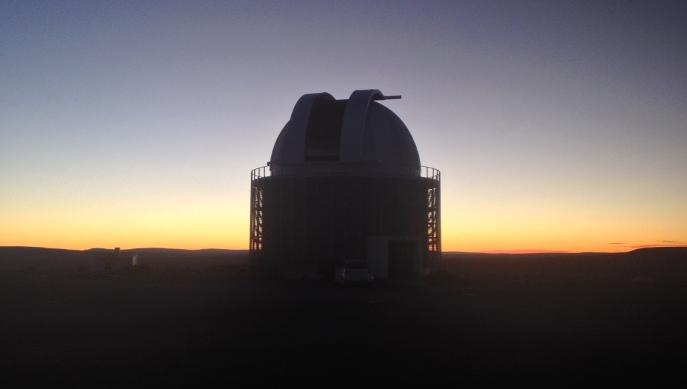

Research
A brief overview

Currently, I am a postdoctoral research associate in the Institute of Astronomy at the KU Leuven in Belgium. My research interests include asteroseismology of intermediate- and high-mass stars, including beta Cephei, SPB, delta Scuti, roAp and gamma Doradus stars, with a particular focus of searching for and interpreting signatures of internal gravity waves in all stars with convective cores. I am working as part of Prof. Conny Aerts' ERC advanced grant: MAMSIE (Mixing and Angular Momentum tranSport of massIvE stars). The MAMSIE team consists of academics, post-docs and PhD students from within the KU Leuven, and has strong links to the research team led by Professor Tamara Rogers at Newcastle University in the UK.
What is Asteroseismology?
Asteroseismology uses stellar oscillations to investigate stellar structure and evolution to improve theoretical models for a diverse range of stars. The quality of space observations, such as from the CoRoT, Kepler/K2 and TESS space telescopes, provide excellent insight of physics that is not currently well understood for massive stars. Massive stars can pulsate in gravity (g) mode oscillations that probe the deep stellar interior and provide insight of the physics near their convective cores. The goal of MAMSIE is to combine these observations with 3D hydrodynamical simulations to improve our understanding of stellar structure and evolution for massive stars. Specifically, constraints from seismic observables will allow prescriptions for angular momentum transport caused by internal gravity waves and mixing by turbulent entrainment to be formulated. Any star with a convective core is a potential star to study, and there are no restrictions on whether a star is a fast or slow rotator, the strength of its magnetic field or the presence of a stellar wind.
Find out more...
A full list of my publications is included as part of my Curriculum Vitae (last updated 01/05/2020), or via the NASA/ADS and Google Scholar links below:
Computing languages
I have extensive experience using Python, Fortran and IDL for scientific projects. Furthermore, I have developed my skills with the stellar evolution code MESA and the stellar pulsation code GYRE for the purpose of forward seismic modelling of main-sequence BAF stars. I am also proficient with LaTeX and html in the context of both scientific and non-scientific projects.
Scientific talks, conference participation and observing experience
As an astronomer and an academic, I am very fortunate to travel the world as part of my job. My Curriculum Vitae contains a complete list of all my past and ongoing observing projects and experience I have at telescopes around the world. Also, it contains a summary of the conferences that I have attended and talks I have presented.